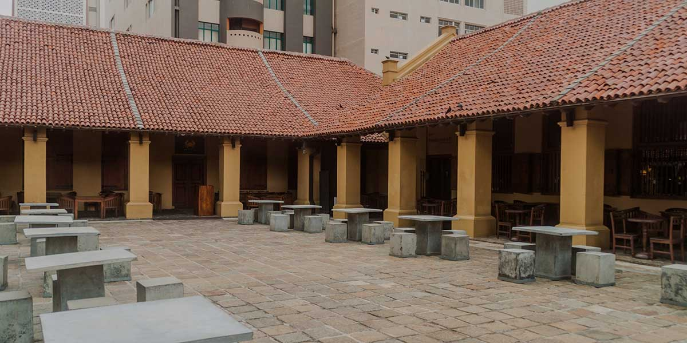

Colombo's oldest building in the Fort area, beautifully restored into a premier dining and shopping courtyard.
Dating back to the Dutch era in the 17th century, this building originally served as a hospital for officers of the Dutch East India Company. Its thick walls, high ceilings, and sprawling courtyards are characteristic of Dutch colonial architecture.
Today, it is the city's most atmospheric social hub, hosting high-end restaurants like Ministry of Crab, boutique shops, and regular live music events. Its location in the heart of Colombo Fort makes it the perfect place for a heritage-infused dinner.
Back to Colombo Hub